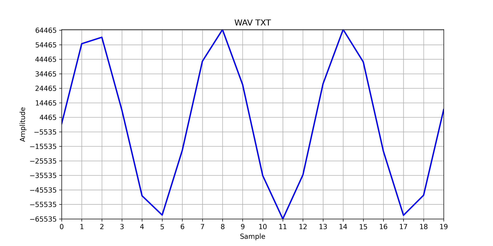

Teoría 604
Ficheros estructurados
Ficheros estructurados
- Hasta ahora, hemos utilizado los ficheros como secuencias de caracteres sin una estructura demasiado compleja.
- Libros, letras de canciones, secuencias de números (uno por línea), etc.
- A menudo, recurriremos a ficheros para cargar/guardar datos con estructuras más complejas.
- Listas, objetos, listas de objetos, etc.
alumnos = [
Alumno("Julio González", 110101, 3, 836),
Alumno("Mery Lopez", 110102, 3, 836),
Alumno("Hector Cortés", 110103, 3, 837),
Alumno("Luis Gracia", 110104, 3, 837)
]- ¿Cómo guardamos esta lista de alumnos en un fichero?
- ¿Cómo la leemos después?
Ficheros estructurados
- Un fichero estructurado es un fichero de texto cuyo contenido sigue una estructura predefinida y bien conocida.
- Los ficheros de secuencias de números que hemos visto son un ejemplo sencillo de ficheros estructurados.
- Cada línea contiene un número.
Ejemplo: WAV-Text
- El sonido analogico es una onda continua (vibraciones del aire).
- La digitalización de una onda continua consiste en tomar muestras de la onda (de su amplitud) a intervalos regulares.
- La codificación WAV es un formato de fichero que almacena una onda digitalizada.
- Podemos inventar un formato equivalente en texto plano, que almacene la misma información como una secuencia de números enteros en un rango concreto.
- Rango 16 bits:
[-32768, 32767]
- Rango 16 bits:
waveform.txt
0 55147 59592 9248 -49598 -62844 -18312 43056 64839 27009 -35653 -65535 -35165 27536 64920 42617 -18868 -63006 -49217 9822

- Para leer dicho fichero y cargarlo en un vector de enteros:
f = open("waveform.txt", "r")
texto = f.read()
f.close()
lista_texto = texto.split(" ")
lista = []
for i in range(len(lista_texto)):
numero = int(lista_texto[i])
lista.append(numero)Recuerda que leer todo el fichero de una vez es tiene un coste mayor en memoria.
Otros formatos más complejos
- La estructura secuencia de datos del mismo tipo es una de las más sencilla que encontraremos.
- No obstante, a menudo necesitaremos trabajar con estructuras más complejas.
- Para ello recurriremos principalmente a:
- Estructuras tabulares
Estructuras ad-hoc
Estructuras tabulares
Tablas
- Las estructuras tabulares son un tipo de fichero estructurado que almacena datos en forma de filas y columnas.
- Cada fila de la tabla representa un registro
- Cada columna representa un campo.
- Es posible que hayas trabajado con datos tabulares si has usado:
- Hojas de cálculo (Excel, Google Sheets, LibreOffice Calc, etc.)
- Bases de datos (MySQL, PostgreSQL, SQLite, etc.)
| Nombre | NIP | Clase | Curso |
|---|---|---|---|
| Julio González | 110101 | 3 | 836 |
| Mery Lopez | 110102 | 3 | 836 |
| Hector Cortés | 110103 | 3 | 837 |
| Luis Gracia | 110104 | 3 | 837 |
DSV (Delimiter Separated Values)
- Un formato común para almacenar datos tabulares es el DSV (Delimiter Separated Values).
- Los ficheros DSV son ficheros de texto plano donde:
- Los registros están separados por saltos de línea.
- Los campos de cada fila están separados por un carácter delimitador.
- DSV es un término genérico que se refiere a cualquier formato de este tipo.
- En función del delimitador, pueden llamarse:
- CSV (Comma Separated Values): usa
,como delimitador. - TSV (Tab Separated Values): usa
\tcomo delimitador.
- CSV (Comma Separated Values): usa
- En función del delimitador, pueden llamarse:
Encontrarás que a menudo se utiliza el término CSV para referirse a cualquier fichero DSV, aunque no use , como delimitador.
Estructura de un fichero CSV
alumnos.csv
Nombre,NIP,Clase,Curso
Julio González,110101,3,836
Mery Lopez,110102,3,836
Hector Cortés,110103,3,837
Luis Gracia,110104,3,837- Como puedes observar, a menudo los ficheros CSV incluyen una cabecera con el nombre de los campos.
- Es importante que, si el fichero tiene cabecera, la primera línea no se procese como un registro.
Ejemplo: Leer un CSV
f = open("alumnos.csv", "r")
cabecera = f.readline()
alumnos = []
linea = f.readline()
while linea != "":
datos = linea.split(",")
# Nombre NIP Clase Curso
alumno = Alumno(datos[0].strip(), int(datos[1]), int(datos[2]), int(datos[3]))
alumnos.append(alumno)
linea = f.readline()
f.close()- Esta es una estructrua que repetiremos a menudo.
- Las partes que variarán serán:
- La forma de crear el objeto en base a los datos.
- La validación de los datos (si fuera necesaria).
- Observa que utilizamos
strip()en los campos de texto para eliminar los saltos de línea y espacios en blanco (limpiar el string).
Popularidad del formato CSV
- La sencillez y portabilidad del formato CSV lo han convertido en uno de los formatos más populares para el intercambio de datos.
- Es un formato ligero y fácil de leer.
- Es muy fácil implementar su soporte en cualquier aplicación.
- Podemos encontrar ejemplos de ficheros CSV en:
- Portales de datos abiertos: https://datos.gob.es/es/catalogo
- Exports de aplicaciones web: Moodle (export alumnos), Google Analytics (exportar informes), etc.
- Podemos cargar y procesar ficheros CSV:
- Con programas propios escritos en Python
- Con programas de terceros (Excel, Google Sheets, LibreOffice Calc, etc.)
- Con programas específicos para esos ficheros
Estructuras ad-hoc
Estructuras ad-hoc
- En otras ocasiones (por el motivo que sea) los formatos con los que trabajaremos no ofrecerán la comodidad de un formato tabular.
- En estos casos, deberemos adaptar nuestro código de forma precisa a la estructura del fichero.
- Ejemplos:
- Fichas de datos donde cada fichero es un registro.
- Ficheros de configuración.
- Formatos específicos basados en texto: (STL, OBJ, etc.)
Ejemplo: Fichas de datos
- Vamos a representar una ficha de personaje de rol.
- Contendrá:
- nombre
- raza y clase
- nivel, fuerza, destreza, inteligencia
- una lista de ataques o hechizos.
sam.txt
Samsagaz Gamgee
Hobbit Escudero
7 15 10 8
Sartenazo 5
Daga 15
Hobbit Escudero
7 15 10 8
Sartenazo 5
Daga 15
gandalf.txt
Gandalf el Blanco
Maia Mago
20 20 20 20
BrilliBrilli 30
NoPuedesPasar 80
Maia Mago
20 20 20 20
BrilliBrilli 30
NoPuedesPasar 80
- Primero vamos a definir las estructuras de datos que utilizaremos para representar la ficha de personaje.
- A continuación, leeremos el fichero y lo cargaremos en un objeto
Personaje.
Samsagaz Gamgee
Hobbit Escudero
7 15 10 8
Sartenazo 5
Daga 15
Hobbit Escudero
7 15 10 8
Sartenazo 5
Daga 15
# PASO 1: Cargamos primero los datos fijos del personaje
f = open("sam.txt", "r")
l1 = f.readline()
l2 = f.readline().split(" ")
l3 = f.readline().split(" ")
personaje = Personaje(
l1.strip(), # Nombre
l2[0].strip(), # Raza
l2[1].strip(), # Clase
int(l3[0]), # Nivel
int(l3[1]), # Fuerza
int(l3[2]), # Destreza
int(l3[3]), # Inteligencia
[] # Ataques (vacío por ahora)
)
# PASO 2: Ahora leermos iterativamente todos sus ataques
linea_ataque = f.readline()
while linea_ataque != "":
datos = linea_ataque.split(" ")
ataque = Ataque(datos[0].strip(), int(datos[1]))
personaje.ataques.append(ataque)
linea_ataque = f.readline()
f.close()JSON
Esta sección sólo está incluida por completitud.
No es parte del contenido de la asignatura y no se evaluará.
- JSON es un formato de intercambio de datos basado en texto que hace uso de una sintaxis avanzada para representar estructuras de datos.
- Es un formato MUY popular y es posible que lo encuentres como formato de intercambio de datos.
- Python tiene soporte nativo para JSON a través del módulo
json.
gandalf.json

Fundamentos de Informática